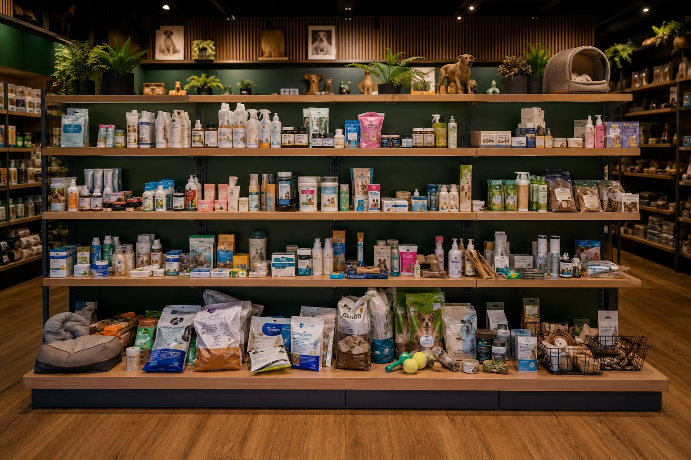
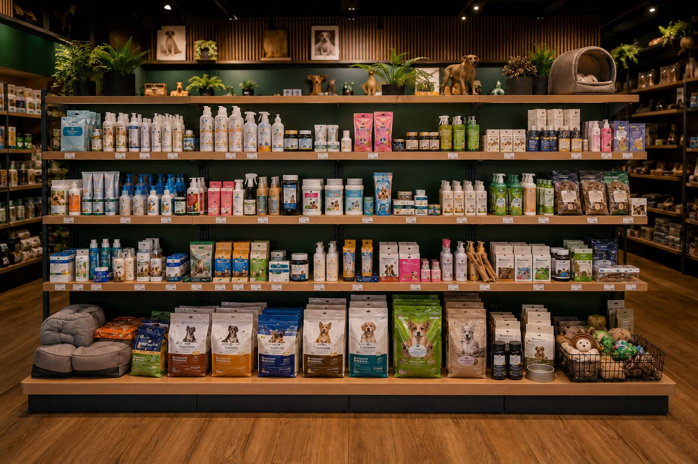

Na chegadaApresentar-se e alinhar a atuação com o responsável.
Comece por aqui
Como usar este manual
Uma ferramenta de trabalho, não um material institucional. Leia por completo no onboarding; consulte por necessidade no campo.
Índice visual · por necessidade
Índice
Descubra aqui o passo a passo para garantir visibilidade e a execução perfeita.
01
Capítulo 01 · Introdução
Seja bem-vindo
A partir de agora você poderá utilizar esse manual no seu dia a dia sempre que tiver dúvidas de como garantir a execução perfeita. Aqui você terá o direcionamento sobre lojas, produtos e perfis de materiais de ponto de venda.
Neste capítulo você vai dominar
Quando ler por completo e quando consultar rápido
A ordem que protege a marca de execução cosmética
O que NÃO é papel do promotor
Objetivo do capítulo
Orientar públicos, momentos de consulta e navegação
O conteúdo responde a perguntas práticas: o que observar ao entrar na loja, como reconhecer o canal, que produto priorizar, como abordar e como registrar a visita. A leitura completa serve ao onboarding; a consulta pontual, ao campo.
Conteúdo desenvolvido
Por que este manual existe
Este manual padroniza a execução em ponto de venda. Lojas, distribuidores e níveis de maturidade comercial diferentes geram resultados desiguais quando não existe um método comum. O documento reduz essa variação e orienta as decisões de campo.
A leitura tem dois modos. No treinamento, a leitura é completa e segue a ordem dos capítulos. Na visita, a consulta é pontual: o profissional abre o capítulo que corresponde à tarefa daquele momento.
O público é a equipe que atua na loja: promotores, distribuidores, equipe comercial e balconistas. O médico-veterinário não recebe abordagem ativa de trade. O relacionamento técnico com o veterinário é conduzido pelo time de Demanda.
Contexto de mercado
O tamanho da oportunidade
O setor pet é grande e segue em crescimento. Uma execução consistente transforma esse potencial em giro dentro da loja.
R$ 75,4 bi
Faturamento do setor pet no Brasil em 2024
160,9 mi
Animais de estimação no país
3º maior
Mercado pet do mundo, atrás de EUA e China
A lógica do manual
Primeiro entender, depois garantir, então melhorar
Essa ordem protege a marca de uma execução cosmética, em que a loja parece ativada, mas segue com ruptura, sem preço ou com categoria confusa.
1
Diagnóstico
Entender a loja
Canal, jornada do shopper e decisores
2
Fundamento
Garantir o básico
Produto disponível, preço e validade
3
Destaque
Visibilidade
Blocagem e campo de visão
4
Crescimento
Incrementos
MPDV, cross e campanha
Três momentos de uso
Antes da visita
Consultar objetivo da loja, materiais, campanhas e pendências anteriores.
Durante a visita
Priorizar: disponibilidade → organização → visibilidade → abordagem → ponto extra.
Depois da visita
Registrar qualidade com checklist, score e evidências fotográficas.
02
Capítulo 02 · Cultura
Empresa, cultura e postura em campo
A marca não se expressa só pelo logo, mas por como o produto é exposto e como o promotor se comporta na loja.
Neste capítulo você vai dominar
Traduzir valores em atitudes observáveis
Representar a marca com postura profissional
Respeitar os limites técnicos de fala
Cuidar da marca em campo é cuidar da execução: produto limpo, preço claro, abordagem respeitosa e orientação responsável.
O promotor é embaixador operacional. Mesmo sem venda direta, influencia a percepção da loja e do shopper.
Objetivo do capítulo
Traduzir cultura em comportamento observável
Não basta dizer que a empresa valoriza cuidado. É preciso mostrar o que isso significa numa loja movimentada, com pouco espaço e múltiplos interesses comerciais.
Conteúdo desenvolvido
Cultura que vira comportamento
A confiança na marca se constrói em detalhes: embalagem limpa, validade conferida, produto no lugar certo, material atualizado e postura cordial. Esses elementos parecem apenas operacionais, mas, juntos, formam a reputação.
O texto institucional deve ser curto e aplicado. Ele responde a três perguntas: quem somos, qual é o nosso papel no cuidado com o animal e como isso muda a execução na loja.
O promotor é o principal ponto de contato da marca dentro do ponto de venda. Uma gôndola desorganizada ou um material vencido prejudicam a percepção da marca tanto quanto uma campanha mal planejada.
Situações de campo
O que fazer em cada momento
O balconista está ocupado
Observe e aguarde o momento adequado para falar.
O produto está sujo ou desalinhado
Limpe e reorganize antes de qualquer outra ação.
A loja resiste ao material de PDV
Explique o objetivo do material e peça autorização.
Um tutor pede indicação técnica
Direcione ao veterinário ou ao material oficial.
Valores em ação
Jogar para ganhar
Resultado por execução correta
Buscar giro através de gôndola limpa, preço visível e produto disponível.
Cuidar das pessoas
Respeitar loja e tutor
Respeitar processos do responsável, o tempo do balconista e o espaço do cliente.
Conectar com o mundo
Aprender com o canal
Ler shopper, concorrência e dados de campo para melhorar a próxima visita.
Postura esperada em momentos críticos
Na gôndolaRespeitar as regras da loja e o processo do responsável.
Dúvida técnicaDirecionar ao veterinário ou material oficial, nunca improvisar.
Ao encerrarCombinar próximo passo e agradecer o tempo da equipe.
Faça em campo
Apresentar-se com postura profissional ao chegar
Respeitar as regras da loja ao mexer na gôndola
Direcionar pergunta técnica ao canal adequado
Checklist
0%
Sei o que a marca espera do comportamento em loja?
Conheço os limites de atendimento técnico?
Mantenho a mesma representação da marca?
03
Capítulo 03 · Produtos
Portfólio de produtos
Reconhecer produto, família, papel de categoria e local de exposição, com fichas comerciais, não mini-bulas.
Neste capítulo você vai dominar
Organizar o portfólio por necessidade de compra
Separar produto de giro, técnico e de campanha
Respeitar o limite entre comunicar e recomendar
Atlas visual do portfólio
Reconheça antes de organizar
Objetivo do capítulo
Conhecer para executar, sem virar prescritor
O shopper pensa em problema, rotina, cuidado, urgência e prevenção. Organizar o portfólio por necessidade deixa a categoria legível e ajuda a loja a expor melhor. Produtos técnicos ganham alerta e direcionam para a fonte oficial.
Conteúdo desenvolvido
Conhecer o produto sem virar prescritor
O portfólio é um dos capítulos mais sensíveis, porque equilibra profundidade comercial e segurança técnica. O promotor precisa reconhecer o produto, a família, o papel de categoria e o local de exposição, mas não assume o papel de quem indica o uso.
A melhor organização parte da necessidade de compra. O shopper pensa em problema, rotina, prevenção, limpeza e bem-estar. Quando a loja expõe o portfólio por necessidade, a categoria fica mais fácil de ler e de recomendar.
Produtos de maior complexidade recebem alerta visual. O manual orienta a exposição, mas direciona para a bula, o QR Code ou o time técnico sempre que houver dúvida sobre indicação ou contraindicação.
Catálogo por linha
Seis linhas, seis papéis no PDV
Leia como uma gôndola: cada prateleira é uma linha do portfólio, com o papel que cumpre, os selos de prioridade e o melhor lugar para posicionar.
Faça em campo
Identificar se o portfólio está por categoria ou misturado
Dar alta visibilidade a proteção e prevenção
Manter técnicos/alto valor em área segura, cross por comunicação
Checklist
0%
Cada linha tem papel comercial claro?
Cada produto tem local sugerido?
Claims foram validados?
QR Codes levam à fonte oficial?
04
Capítulo 04 · Linguagem
Conceitos de Trade Marketing
A camada que cria a linguagem comum, para promotores, distribuidores, comercial e gestores falarem do mesmo problema com as mesmas palavras.
Neste capítulo você vai dominar
Por que sell-in não garante sell-out
Ponto natural antes de ponto extra
Ligar cada conceito a uma ação
Objetivo do capítulo
Nivelar a linguagem de execução comercial
Cada conceito em três blocos: definição simples, exemplo no mercado pet e implicação prática. Ruptura não é só falta de produto, é perda de venda, de recomendação, de confiança e possível deslocamento para o concorrente.
Conteúdo desenvolvido
A linguagem comum do trade
Trade marketing é a disciplina que transforma a estratégia comercial em execução no ponto de venda. Para a Ourofino Pet, isso significa garantir que o produto esteja disponível, visível, organizado, comunicado e apoiado por uma abordagem correta.
Cada conceito deve ser apresentado em três blocos: definição simples, exemplo no mercado pet e implicação prática. Ruptura, por exemplo, não é apenas a falta do produto. É perda de venda, perda de recomendação e possível migração do cliente para o concorrente.
Os conceitos se conectam a indicadores. Disponibilidade conversa com ruptura. Visibilidade conversa com o espaço na gôndola e o campo de visão. Organização conversa com o planograma e a blocagem.
Infográfico · o conceito central
Sell-in não garante sell-out
Vender para a loja é só o começo. Sem execução, o produto não gira.
1
Venda à loja
Sell-in
O produto foi vendido à loja, mas ainda não chegou ao shopper
2
O elo decisivo
Execução
Disponível, visível e com preço na gôndola
3
Resultado
Sell-out
Giro real: o shopper compra e a categoria cresce
Se a execução falha, o sell-in não vira sell-out.
Glossário interativo
Conceitos essenciais
Dez conceitos aplicados ao pet, cada um com sua implicação de campo.
Faça em campo
Ao achar ruptura, registrar e acionar reposição
Ao aplicar MPDV, definir o objetivo primeiro
Ligar sell-out a qualidade de execução, não só volume
Checklist
0%
Sei diferenciar disponibilidade, visibilidade e giro?
Cada conceito tem uma ação associada?
Entendo ponto natural vs. ponto extra?
05
Capítulo 05 · Contexto
Canais, jornadas e segmentações
A execução não pode ser igual em toda loja. Aprenda a ler o canal e adaptar a atuação antes de mexer em qualquer produto.
Neste capítulo você vai dominar
Reconhecer o formato da loja em 5 minutos
Ler a jornada do shopper e as áreas quentes
Identificar quem decide espaço e quem recomenda
Objetivo do capítulo
Ler o PDV como um ecossistema antes de agir
Um pet shop de autosserviço, um pet shop com clínica e uma clínica com pet shop têm fluxos, decisores e permissões diferentes. Observar primeiro evita instalar material sem fluxo, propor cross na categoria errada ou abordar quem não decide.
Conteúdo desenvolvido
Ler a loja como um ecossistema
A segmentação de canais impede que a execução vire uma receita única. Uma loja de bairro com atendimento consultivo, um grande autosserviço e uma clínica com farmácia anexa não oferecem o mesmo espaço, o mesmo fluxo nem o mesmo decisor.
A jornada também determina a mensagem. Em áreas de espera, o material educativo funciona melhor. No caixa, a mensagem curta e a oferta de conveniência têm mais efeito. Na gôndola, a comparação e a organização importam mais.
Antes de agir, o promotor observa. Uma boa leitura de loja evita instalar material sem fluxo, propor cross na categoria errada ou abordar quem não tem poder de decisão.
Infográfico · Jornada do shopper
Onde o shopper entra, olha, pergunta, espera e paga
Cada zona pede uma mensagem diferente. Leia os pontos quentes numerados.
1
EntradaPrimeira impressão e leitura do canal
2
FluxoPor onde circula até a farmácia
3
FarmáciaComparação e organização importam
4
Banho & TosaRotina de cuidado e reposição
5
CaixaMensagem curta e conveniência
Comparação · 3 formatos de canal
Mesmo produto, execução diferente
Cada formato de canal pede uma prioridade de execução distinta. Compare os três antes de definir a abordagem.
Pet shop
CompraPlanejada / conveniência
DecisorDono · balconista
OportunidadeAutosserviço · cross
PrioridadeDisplay no caixa
Pet + clínica
CompraLoja no foco
DecisorGerente · balconista
OportunidadeMaterial educativo
PrioridadeApoiar sem invadir vet
Clínica + pet
CompraServiço no centro
DecisorRecepção · vet
OportunidadeFarmácia complementa
PrioridadeDisponibilidade
Dono: autoriza espaço
Gerente: compra e negocia
Balconista: recomenda
Veterinário: influência técnica
Faça em campo
Identificar o canal nos primeiros minutos
Mapear entrada, caixa, farmácia, banho/tosa e corredores
Escolher UMA prioridade por visita
Checklist
0%
Canal identificado?
Decisor mapeado?
Áreas quentes registradas?
Oportunidade principal definida?
06
Capítulo 06 · Sortimento
Sortimento e farmácia P/M/G
Sortimento é foco: não é colocar todo o portfólio em todo lugar, mas garantir o mix certo para cada perfil de farmácia.
Neste capítulo você vai dominar
Classificar a farmácia como P, M ou G
Priorizar o mix mínimo quando falta espaço
Separar tamanho físico de potencial comercial
Objetivo do capítulo
Uma matriz que decide quando o espaço é limitado
A matriz P/M/G responde: quais SKUs são obrigatórios, recomendados e de ampliação; quais exigem visibilidade privilegiada; quais exigem proteção. Farmácia pequena exige disciplina; farmácia grande exige arquitetura.
Conteúdo desenvolvido
Sortimento é uma decisão de foco
O objetivo não é colocar todo o portfólio em todo lugar, mas garantir que cada perfil de farmácia tenha o mix adequado para o seu tamanho, fluxo e potencial. Uma farmácia pequena exige disciplina. Uma farmácia grande exige arquitetura.
A matriz P, M e G funciona como ferramenta de decisão, não como tabela decorativa. Ela responde quais SKUs são obrigatórios, quais são recomendados, quais entram quando há espaço ou campanha e quais exigem proteção.
É importante separar tamanho físico de potencial comercial. Uma farmácia pequena pode ser estratégica por causa do alto fluxo. Uma farmácia grande pode estar mal explorada quando o mix é disperso.
Comparativo · mix mínimo por porte
O mix cresce com o porte da loja
Cada formato de farmácia pede um sortimento mínimo. Compare os três portes lado a lado.
P
Farmácia PFoco
- Proteção e prevenção
- Vermifugação
- Principais cuidados
- Priorizar giro e essenciais
M
Farmácia MComplementar
- Tudo da farmácia P
- Suplementos prioritários
- Linha de ambiente
- Construção de linha
G
Farmácia GAmpliado
- Linhas completas
- Displays e ponto extra
- Cross estruturado
- Comunicação por campanha
Faça em campo
Classificar a farmácia como P, M ou G
Comparar a presença real com o mix mínimo
Usar top produtos como prioridade de reposição
Checklist
0%
Perfil da farmácia definido?
Mix mínimo validado?
Top produtos presentes?
Rupturas registradas?
07
Capítulo 07 · Execução
Execução, gôndola e planograma
A camada mais visível do manual. A boa gôndola deixa encontrar a categoria, entender a oferta, comparar e confiar na marca.
Neste capítulo você vai dominar
A hierarquia de execução, do básico ao incremento
Critérios de blocagem e campo de visão
O passo a passo do antes/depois com evidência
Estudo visual de execução
O mesmo espaço. Dois resultados.
Compare disponibilidade, agrupamento, alinhamento, blocagem, facings e clareza de preço.

ANTES: leitura dispersa
DEPOIS: lógica e consistênciaObjetivo do capítulo
Uma hierarquia que resolve venda antes de estética
Ponto extra, cross e materiais só fazem sentido depois que o ponto natural está minimamente correto. Suba a escada na ordem.
1Básico
Disponibilidade · preço · validade
2Organização
Categoria · blocagem · facing
3Comunicação
MPDV com objetivo claro
4Incremento
Ponto extra · cross · campanha
Conteúdo desenvolvido
A gôndola materializa a estratégia
Quando está organizada, a marca parece confiável, a categoria fica compreensível e a recomendação do balconista se torna mais fácil. Quando está confusa, mesmo um bom produto perde a chance de ser escolhido.
A execução segue uma hierarquia: disponibilidade, integridade, preço, validade, categoria, blocagem, facing, comunicação e, por último, o incremento. Essa ordem evita buscar o detalhe visual antes de resolver o que afeta a venda.
A organização respeita a lógica de compra. Produto individual ao lado do combo, itens de mesma função próximos e sequência por porte quando fizer sentido. A regra é tornar a escolha mais intuitiva.
Situações de campo
O que corrigir primeiro
Produto sem preço
Reduz a conversão mesmo em bom local. Sinalize e reponha a etiqueta.
Material cobre o preço
Reposicione. O preço nunca pode ficar coberto.
Categorias misturadas
Reagrupe por linha para facilitar a leitura.
Espaço vazio na prateleira
Registre a ruptura e acione a reposição.
Comparativo · antes e depois
Antes e depois
O mesmo espaço, duas execuções lado a lado. Compare os critérios que tornam a execução mais clara e comercial.
O passo a passo em campo
Os 8 movimentos
Fotografar antes
Retirar produtos fora de lugar
Limpar e alinhar embalagens
Aplicar FIFO
Organizar por linha/categoria
Conferir preço
Aplicar MPDV autorizado
Fotografar depois
Faça
- Blocar por linha e manter leitura clara
- Individual ao lado do combo para comparar
- Fotos antes/depois com mesma distância e ângulo
Evite
- Espaçamento excessivo para parecer mais produto
- Misturar categorias sem critério
- Cobrir o preço com material
Evidência fotográfica (C07-03)
Mãos aplicando FIFO (girando validade)
Limpando e alinhando a embalagem
Conferindo e repondo a etiqueta de preço
Checklist
0%
Produto presente e limpo?
Preço visível e validade conferida?
Blocagem coerente?
Foto antes/depois feita?
08
Capítulo 08 · Cross
Cross merchandising
Construção de relevância, não multiplicação de exposições. A boa associação antecipa uma necessidade do tutor.
Neste capítulo você vai dominar
Conectar necessidades reais do tutor
Preferir MPDV a deslocar produto de valor
Classificar o risco antes de executar
Objetivo do capítulo
Venda complementar sem bagunçar a loja
Parta de necessidades: higiene e ambiente, banho e cuidado, proteção e prevenção. Quando houver risco de deslocar produto da farmácia, o cross deve ser feito preferencialmente por MPDV, preserva controle e reduz perda.
Conteúdo desenvolvido
Cross é construção de relevância
A boa associação antecipa uma necessidade do tutor e ajuda a loja a vender uma solução mais completa. A associação ruim desloca produto sem critério, gera risco e confunde a categoria.
A recomendação parte de necessidades: higiene e ambiente, banho e cuidado, proteção e prevenção, rotina e reposição. Para cada necessidade, o manual indica quais produtos trabalhar, qual material é mais seguro e qual mensagem é aprovada.
Quando existe risco de deslocar produto da farmácia, o cross deve ser feito por material de PDV. Isso preserva o controle, reduz a perda e lembra a categoria sem tirar o produto do seu ponto natural.
Pares que fazem sentido
Associações que ajudam o shopper
A conexão antecipa uma necessidade, não empurra produto.
Higiene
+Areia / tapete
Cuidados
+Banho & tosa
Proteção
+Sazonal
Matriz de risco do cross
Classifique antes de executar
Baixo, médio ou alto, o risco define se usa comunicação ou exposição física.
Faça em campo
Avaliar se há relação real entre categorias
Pedir autorização antes de deslocar produto
Preferir material de PDV quando houver risco
Registrar foto e acompanhar o resultado
Checklist
0%
Cross tem racional de shopper?
Lojista autorizou?
Mensagem foi aprovada?
Foto registrada?
09
Capítulo 09 · MPDV
Materiais de PDV
Material não é decoração. Cada peça cumpre uma função, e precisa de um motivo para existir naquele local.
Neste capítulo você vai dominar
Escolher o material certo para cada objetivo
Instalar sem cobrir preço nem produto
Retirar o que está vencido, sujo ou vazio
Objetivo do capítulo
Padronizar objetivo, instalação, uso e retirada
A qualidade do MPDV depende de três dimensões: adequação ao objetivo, qualidade física e qualidade de instalação. Um material bom, no local errado, falha. Um material correto, velho ou torto, prejudica a percepção.
Conteúdo desenvolvido
O material orienta o comportamento
O MPDV orienta o olhar, reduz a dúvida, destaca a prioridade e convida para uma compra complementar. Usado sem objetivo, vira poluição visual e perde força.
Cada tipo tem uma regra: material permanente, de campanha, educativo, de preço, de ponto extra e de cross. Cada um tem vida útil, local ideal, forma de instalação e critério de retirada.
A qualidade depende de três dimensões: adequação ao objetivo, qualidade física e qualidade de instalação. Um material correto, no local errado, falha. Um material bem instalado, mas com produto em falta, gera frustração.
Fichas técnicas de material
Cada material, seu objetivo e melhor local
Seis peças e onde cada uma performa. Os mockups fotorreais entram como C09-01.
Checklist de instalação
Conferir campanha e validade
Pedir autorização
Instalar em local de fluxo, sem cobrir preço
Fotografar depois e retirar o vencido
Checklist
0%
Material vigente e autorizado?
Local tem fluxo?
Produto está abastecido?
Foto registrada?
10
Capítulo 10 · Pessoas
Papel do promotor
Execução, relacionamento e inteligência. O promotor não é mão de obra operacional, é o olhar da marca dentro da loja.
Neste capítulo você vai dominar
Onde a autonomia começa e termina
A lógica faço · apoio · escalo · não faço
Gerar inteligência de campo
Objetivo do capítulo
Escopo claro protege o promotor e a marca
A clareza de responsabilidades reduz atrito: a loja sabe o que esperar, o distribuidor entende o apoio e o gestor avalia com critérios objetivos. A estrutura "faço · apoio · escalo · não faço" ajuda em situações ambíguas.
Conteúdo desenvolvido
Execução, relacionamento e inteligência
O promotor não é apenas mão de obra operacional. Ele é o olhar da marca dentro da loja. Ao mesmo tempo, o seu escopo precisa ser protegido para evitar conflitos comerciais e atuação técnica sem respaldo.
A clareza de responsabilidades reduz o atrito. A loja sabe o que esperar, o distribuidor entende o apoio e o gestor avalia o desempenho com critérios mais objetivos.
A lógica faço, apoio, escalo e não faço é mais útil do que uma lista genérica de atribuições, porque orienta o promotor nas situações em que a decisão não é óbvia.
Situações de campo
Como agir
Faltou produto
Registre a ruptura e acione o canal responsável.
Há oportunidade de ponto extra
Registre e alinhe com o gestor.
O veterinário pede informação técnica
Direcione para o time de Demanda.
Quadrante de responsabilidade
Faço · apoio · escalo · não faço
Onde o promotor age sozinho, onde apoia, o que escala e o que nunca faz.
Faço
- Observar, organizar e corrigir o básico
- Aplicar material autorizado
- Registrar evidências e oportunidades
Apoio
- Negociação de espaço com o gestor
- Alinhamento com o distribuidor
- Ações de campanha
Escalo
- Ruptura recorrente e problema de preço
- Conflito com a loja
- Pergunta técnica e ação concorrente
Não faço
- Prescrever ou prometer resultado
- Mexer em área proibida
- Instalar sem autorização ou discutir
Inteligência de campo:
ruptura recorrente, resistência de loja, concorrente dominante e oportunidade de sortimento são informações valiosas, o promotor é o olhar da marca no PDV.
Faça em campo
Chegar com objetivo claro e alinhar com o responsável
Corrigir o básico e aplicar material autorizado
Registrar evidências e escalar o que não depende dele
Checklist
0%
Responsável da loja foi alinhado?
Básico foi corrigido?
Pendências foram registradas?
Limites técnicos respeitados?
11
Capítulo 11 · Rotina
Rotina operacional ProTrade
O sistema operacional da visita. Transforma intenção em sequência, e sequência em padrão mensurável.
Neste capítulo você vai dominar
A sequência preparar → diagnosticar → executar → fechar
Adaptar a visita de 2h e a de 6h
Registrar evidências que geram gestão
Objetivo do capítulo
Converter a visita em processo padronizado
Sem rotina, a qualidade depende demais da experiência individual. Cada etapa existe por um motivo: a foto antes é linha de base; o score é melhoria; a pendência é dado para gestão, não burocracia.
Conteúdo desenvolvido
A rotina é o sistema operacional da visita
A rotina transforma a intenção em sequência e a sequência em padrão mensurável. Sem ela, a qualidade depende demais da experiência individual de cada promotor.
A rotina é flexível por duração e objetivo. Uma visita de duas horas não tem a mesma profundidade de uma de seis horas, mas ambas seguem a mesma lógica: preparar, diagnosticar, executar, abordar, registrar e fechar.
O maior risco é a rotina virar burocracia. Por isso, cada etapa é explicada. A foto inicial é a linha de base. O score é instrumento de melhoria. A pendência é dado para a gestão.
Linha do tempo da visita
Seis etapas, sempre na mesma ordem
Aplicar material antes de corrigir ruptura é o erro clássico. Diagnóstico vem antes da execução.
Prepararobjetivo, materiais
Diagnosticarler a loja
Executarcorrigir, aplicar
Abordarno momento certo
Registrarfotos, score
Fecharpendências
Visita 2h
- Correção rápida e registro
- Foco no básico e na ruptura
- Score essencial e pendências
Visita 6h
- Reorganização profunda
- Abordagem e apoio a ação
- Campanha com briefing e meta
Faça em campo
Planejar visita e confirmar materiais
Alinhar entrada e fotografar antes
Corrigir prioridade e conversar com a loja
Fotografar depois, preencher score e escalar pendências
Checklist
0%
Objetivo claro e tempo planejado?
Fotos feitas?
Score preenchido?
Pendências escaladas?
12
Capítulo 12 · Abordagem
Abordagem e scripts
O ponto em que execução encontra relacionamento. Boa abordagem começa por permissão e diagnóstico, não por empurrar mensagem.
Neste capítulo você vai dominar
Escutar antes de apresentar
Adaptar o script por público
Proteger a marca com o limite técnico
Objetivo do capítulo
Conversas comerciais sem invadir o técnico
Cada público tem um objetivo: o balconista precisa de argumento simples; o gerente enxerga giro e organização; o cliente é atendido sem invasão. Quando surge dúvida técnica, direcione ao veterinário, à Demanda ou ao material oficial.
Conteúdo desenvolvido
A abordagem une execução e relacionamento
A boa abordagem destrava a recomendação, gera colaboração da loja e melhora a qualidade da exposição. A abordagem invasiva, longa ou técnica demais cria resistência.
Ela começa por permissão e diagnóstico. Antes de falar do produto, o promotor observa, entende o momento e faz uma pergunta útil. Isso muda o tom: de empurrar mensagem para ajudar a loja a vender melhor.
Os scripts são guias, não textos decorados. Eles dão segurança para a abertura, a pergunta, o argumento, o limite técnico e o fechamento, com frases permitidas e frases a evitar.
Abordagem em ação
Abrir por permissão, fechar com próximo passo
Um exemplo de conversa que ajuda a loja a vender melhor.
Promotor
Posso te mostrar rápido como organizamos essa linha?Balconista
Pode, mas tá corrido hoje.Promotor
Tranquilo, em 2 minutos. Quais produtos o time tem mais dificuldade de explicar?Balconista
Os de proteção, o povo pergunta muito.Promotor
Deixei os principais no campo de visão e com preço. Para uso e dose, o ideal é o cliente falar com o veterinário. Combinado?Diga assim · evite dizer
Diga assim
"Posso te mostrar rápido como organizamos essa linha?"
"Vi uma oportunidade de melhorar a leitura da categoria."
"Para orientação de uso, o ideal é consultar o veterinário."
"Quais produtos o time tem mais dificuldade de explicar?"
Evite dizer
"Esse aqui é melhor que o do concorrente."
"Vou mudar tudo aqui, deixa comigo."
"Pode dar essa dose que resolve."
"Compra logo que esse vende sozinho."
Faça em campo
Observar se a pessoa está receptiva
Abrir conversa com permissão e pergunta diagnóstica
Apresentar só argumento aprovado
Encerrar com o próximo passo
Checklist
0%
Momento era adequado?
Pergunta foi feita?
Mensagem era aprovada?
Dúvida técnica foi direcionada?
13
Capítulo 13 · Conduta
Conduta profissional
Conduta é estratégia de trade. Uma visita com boa execução técnica perde valor se o comportamento gera desconforto.
Neste capítulo você vai dominar
O código sempre / nunca
Uso responsável de celular e fotos
Uniforme conforme o perfil
Objetivo do capítulo
Regras que protegem, não que policiam
As regras existem para proteger o promotor, a loja, o tutor, o animal e a marca. Isso torna a conduta mais fácil de aceitar e cumprir. Uma boa postura facilita acesso a espaço, abertura para conversa e confiança no trabalho.
Conteúdo desenvolvido
Conduta é um ativo de trade
A conduta protege a relação, a permissão de execução e a reputação. Uma boa postura facilita o acesso ao espaço, a abertura para a conversa e a confiança no trabalho da indústria.
O capítulo é normativo, mas não policialesco. As regras existem para proteger o promotor, a loja, o tutor, o animal e a marca. Isso torna a conduta mais fácil de aceitar e de cumprir.
A conduta também trata de situações comuns: loja cheia, responsável ausente, conflito, concorrente presente, uso de celular, fotos, uniforme e confidencialidade.
O código de conduta
Sempre
Apresentar-se ao chegar e pedir autorização antes de mexer
Manter postura cordial e respeitar o fluxo da loja
Registrar sem expor rosto de clientes ou colaboradores
Diante de conflito: não discutir, registrar e escalar
Nunca
Tratar a loja como espaço da indústria
Comentar negativamente o concorrente
Usar o celular para assuntos pessoais na execução
Criar atrito com o balconista
Uniforme e jaleco:
o jaleco pode fazer sentido para o promotor direto em dias de abordagem, mas não necessariamente para todos os perfis. Diferencie obrigatório, recomendado e quando aplicável.
Faça em campo
Apresentar-se e pedir autorização antes de mexer
Usar o uniforme conforme a regra e manter postura cordial
Registrar sem expor pessoas
Checklist
0%
A visita foi autorizada?
A postura foi adequada?
Houve respeito aos processos?
Fotos preservam a privacidade?
14
Capítulo 14 · Indicadores
Indicadores, score e qualidade
A ponte entre visita e gestão. Sem indicadores, a operação sabe que trabalhou, mas não sabe se melhorou.
Neste capítulo você vai dominar
Um score simples e significativo
Ligar execução a sell-out
Separar causa de sintoma
Objetivo do capítulo
Transformar visita em aprendizado
O score precisa ser simples para ser usado em campo e robusto para orientar decisão. Boa execução com baixo giro pede revisão de mix ou preço; baixo score com baixo giro pede correção do básico.
Conteúdo desenvolvido
Indicadores ligam a visita à gestão
Sem indicadores, a operação sabe que trabalhou, mas não sabe se melhorou. O capítulo mede o que importa: disponibilidade, visibilidade, organização, material correto, abordagem e evolução.
O score precisa ser simples para ser usado em campo e robusto para orientar a decisão. Muitos indicadores geram fadiga. Poucos escondem problemas. A recomendação é combinar um score básico com campos qualitativos.
A leitura separa causa de sintoma. A ruptura pode ser problema de reposição, compra ou demanda. O material ausente pode ser falta de estoque, resistência da loja ou falha de rotina. O manual ajuda a interpretar.
Dashboard de execução
O que a gestão acompanha
Poucos indicadores, bem escolhidos. Muitos geram fadiga; poucos escondem problemas.
Disponibilidade
92%
Preço visível
78%
MPDV correto
85%
Score médio
72
Alto score, baixo giro
- Revisar mix, preço e argumento
Baixo score, baixo giro
- Corrigir o básico primeiro
Calculadora de scorecard
Dê nota 0, 1 ou 2 a cada bloco
Veja a classificação da loja em tempo real.
1
Observe a loja e avalie cada um dos 8 blocos abaixo.
2
Dê a nota de cada bloco: 0 = não conforme · 1 = parcial · 2 = conforme.
3
O score soma automaticamente as 8 notas, chegando a no máximo 16 pontos.
0–6Crítica: refazer o básico com urgência
7–10Em evolução: corrigir os blocos zerados
11–13Conforme: manter e buscar incrementos
14–16Excelência: referência de execução
Score
0/16
Preencha os blocos
Faça em campo
Preencher o score após a visita
Anexar fotos obrigatórias e classificar pendências
Escalar ruptura e problema de preço
Acompanhar a evolução por loja
Checklist
0%
Score preenchido?
Fotos suficientes?
Pendência tem dono?
Indicador gera decisão?
15
Capítulo 15 · Anexos
Anexos práticos
A parte que o usuário imprime, consulta no celular e leva para o campo. Anexos transformam o manual em ferramenta de trabalho.
Neste capítulo você vai dominar
Quais ferramentas usar em campo e treinamento
Manter o manual vivo com atualização por anexo
Onde incorporar os materiais internos
Objetivo do capítulo
Ferramentas destacáveis para o dia a dia
Checklists, scorecards, fichas de MPDV, scripts e roteiros podem virar materiais independentes. Ao mudar portfólio, campanha ou rotina, basta atualizar o anexo, sem refazer o documento inteiro.
Conteúdo desenvolvido
Anexos transformam o manual em ferramenta
Os anexos são a parte que o usuário imprime, consulta no celular e leva para o campo. Por isso, são desenhados com objetividade, boa hierarquia e o mínimo de texto necessário.
Nem todo conteúdo precisa ficar preso ao PDF principal. Checklists, scorecards, fichas de MPDV, scripts e roteiros podem virar materiais independentes, especialmente para promotores e distribuidores.
Os anexos também mantêm o manual vivo. Quando muda o portfólio, a campanha ou a rotina, basta atualizar o anexo correspondente. É também onde os materiais internos da Ourofino são incorporados.
Toolkit de campo
Nove ferramentas destacáveis
Desenhadas para consulta rápida, impressão ou envio por WhatsApp corporativo.
Como usar
Checklist antes e depois da visita
Scorecard para auditoria
Matriz de MPDV para decidir material
Guia de fotos para padronizar evidência
Checklist
0%
Anexo é destacável?
Cabe no celular?
Tem dono de atualização?
Foi testado com promotor?
Fixação
Teste sua execução
Cinco situações de campo para calibrar o que você aprendeu.